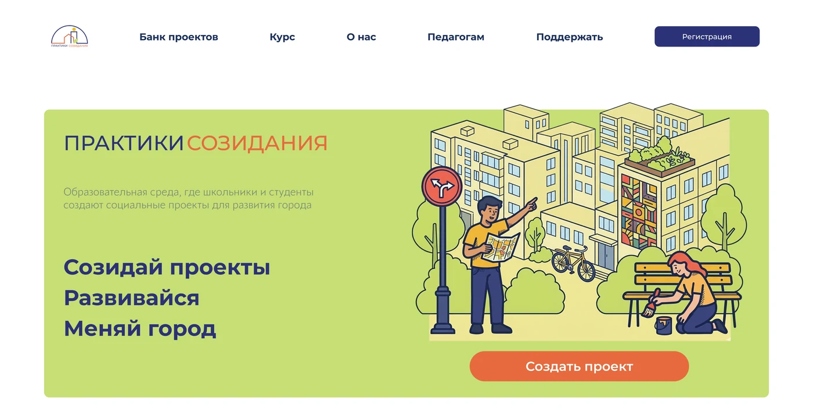

Редизайн многостраничного сайта федеральной образовательной программы

Задача:
Проект реализован в рамках ВКР. Сайт и коммуникация не работали на вовлечение молодой аудитории и не приносили заявки на регистрацию.
Задача состояла в том, чтобы привести коммуникацию в соответствие с масштабом и амбициями проекта. Сайт переосмыслить, чтобы он стал точкой входа для трёх сегментов аудитории (педагоги, подростки, фандрайзинг), но работал на целевой сегмент.
Что я сделала:
- Провела комплексный бренд-анализ: аудит существующих коммуникаций. Проанализировала поведение пользователей на сайте (например, аудиторию 40+ не смущает новый домен при открытии формы для регистрации, а вот подростки отваливались из-за этого в 90% случаев)
- Сформулировала коммуникационную платформу (аудитория, УТП, характер бренда, интонация текстов, визуальный стиль)
- Переделала полностью главный экран. Абстрактные тексты «Реализуй свои мечты» не работают – они абстрактны, не обращаются к аудитории, к ее болям и никак не демонстрируют ценности/предложения организации. Тексты, изображения, призыв к действию
- Переделала структуру и навигацию сайта. Построила сценарий пользовательского пути для каждого сегмента (в особенности для подростка: путь должен вести к регистрации)
- Отрисовала дизайн в новом фирменном стиле
Особенности:
- Проект реализовывался для НКО с объемным брифом и низким бюджетом
- Три совершенно разные аудитории со своими целями и барьерами
Результат:
На время тестирования сайта вовлеченность подростков (время на сайте, переходы на другие страницы) увеличилась на 70%. Заявок с формы сайта + с перехода в ИИ бот +20%. На данный момент организация перестраивает свои внутренние процессы, приоритетом стал фандрайзинг.